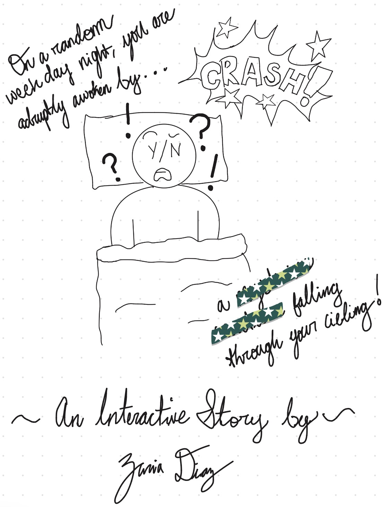

My interative story takes place in a small apartment in a nondescript city. The protagonist is adruptly waken up from sleep due to a jarring crash sound just outside of their bedroom. The story follows the protagonist as they figure out what to do in this situation and what exactly has just crashed through their ceiling. I was inspired by my recent fixation on reading manga, manwha, and watching c-dramas on supernatural beings, transmigration, historical fantasy, and meddling dieties.
The user will make choices that change the direction of the story. Some choices lead to safety, while others lead to strange discoveries, unexpected danger, or questionable rewards. The story includes multiple paths and endings. I decided to do some sketches for the story artwork. I am no artist, so these are very rudimentary.
Below is the first draft of my story map showing potential directions and endings. This will be subject to change as I continue to flesh out the story

For the scene image, I decided to create the cover image of my story that features the first scene. The setting is the protagonist's bedroom when they are suddenly woken up.
